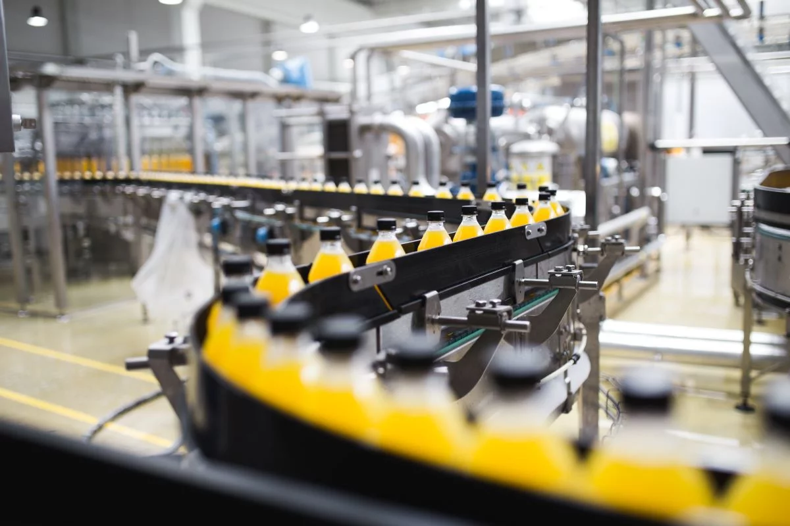
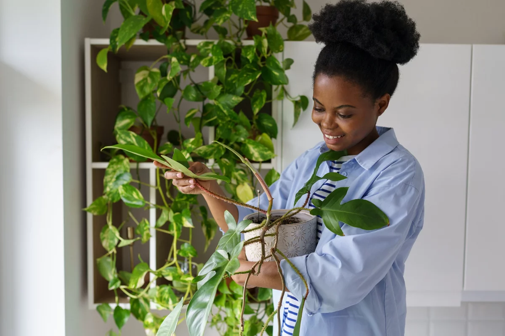
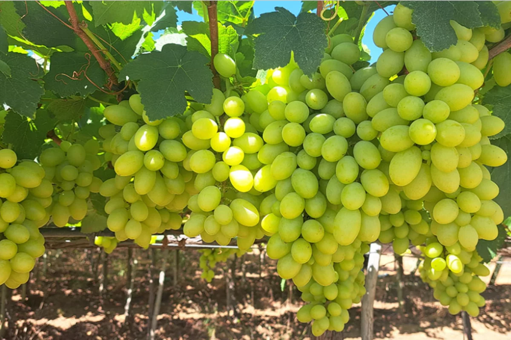

Suco de laranja dispara, mas a fruta segue pressionada: o que vem pela frente?

Enquanto o preço do suco de laranja atinge níveis recordes no mercado internacional, os produtores da fruta no Brasil enfrentam dificuldades com preços baixos e margens apertadas. A discrepância entre o valor do suco e da laranja in natura levanta debates sobre a cadeia de produção e distribuição.
Especialistas apontam que a alta demanda externa e estoques reduzidos impulsionam os valores do suco, enquanto os produtores de laranja lidam com custos crescentes, pragas e dificuldades logísticas.
Fonte: Estadão Agro
Embrapa desenvolve solução para deixar plantas — e donos — mais felizes

A Embrapa lançou uma nova tecnologia que permite monitorar, em tempo real, a saúde das plantas em ambientes urbanos e rurais. A solução une sensores e inteligência artificial para identificar sinais de estresse hídrico, pragas ou deficiências nutricionais antes que causem prejuízos.
Segundo os pesquisadores, a ferramenta pode ser usada tanto em vasos de plantas domésticas quanto em lavouras, permitindo cuidados mais precisos e reduzindo desperdícios de água e insumos.
Fonte: Estadão Agro
O segredo por trás da uva sem caroço

Você já se perguntou como a uva cresce sem caroço? Isso é possível graças a processos biológicos como partenocarpia e estenospermocarpia, que permitem formar frutos sem sementes — natural ou via hormônios vegetais.
A popularidade das uvas sem caroço levou a investimentos em novas variedades, como a BRS 54 Lumiar da Embrapa, que reduz custos com mão de obra e royalties, além de favorecer alta produtividade, ideal para o Semiárido :contentReference[oaicite:2]{index=2}.
Fonte: Agro Estadão